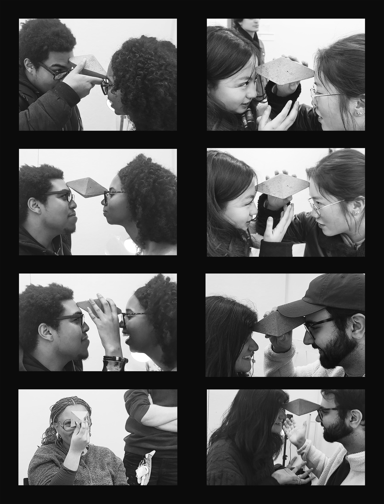
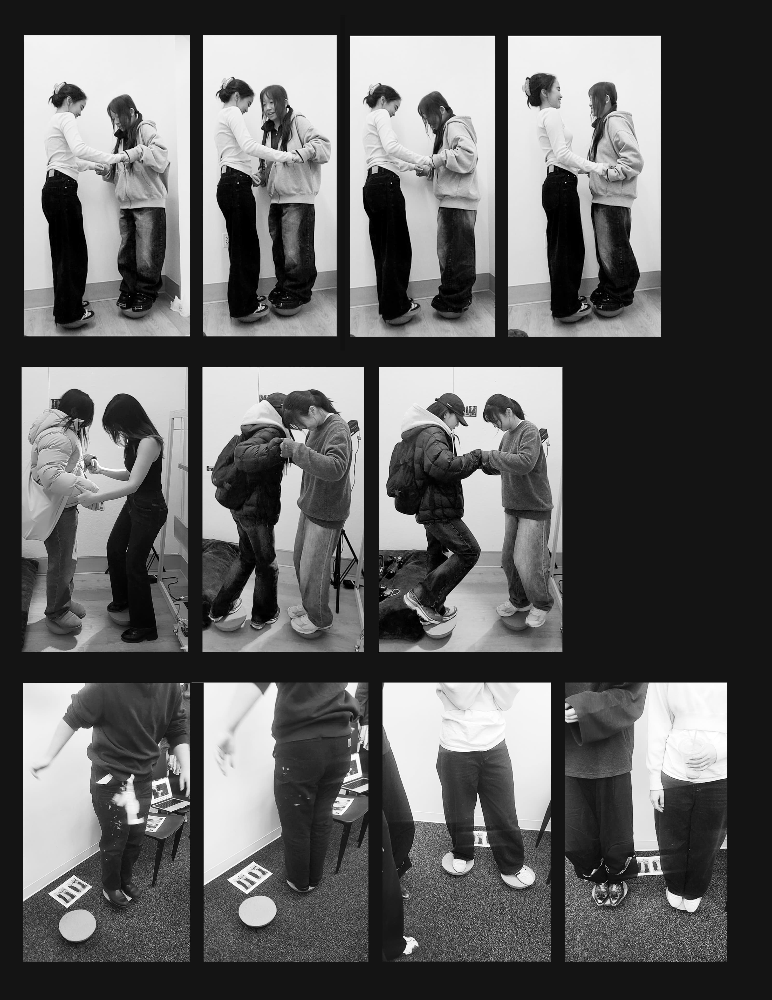

Hedgehog’s Dilemma
Ceramic, Silicone · 2025
Negotiation — Instability — Reciprocity — Balance — Friction — Care —
Negotiation — Instability — Reciprocity — Balance — Friction — Care —
My practice begins with the relational conditions that shape how we move toward and away from one another. I am drawn to moments when connection is possible but not guaranteed—when bodies hesitate, tremble, or negotiate their own thresholds of closeness. Instability in my work is not a problem to solve but a shared condition to inhabit. The sculptures I make operate in contingent environments where vulnerability becomes perceptible: a pause before stepping closer, the instinct to protect oneself, or the recognition that both care and threat often coexist. These objects do not promise improvement; they reveal the subtle adjustments we may need to make to live alongside uncertainty.
My working process is experimental and relational. I build prototypes, observe bodily responses, and recalibrate friction, invitation, and boundary. Materials are chosen for the behaviors they enact—surfaces that unsettle, forms that ask for care but do not ensure safety, the unexpected softness found within resistance. These objects function as conditions rather than messages, staging the lived negotiations of approach, avoidance, desire, doubt, closeness, and defense.
I create sculptural situations that ask viewers to engage—physically or imaginatively—with proximity, hesitation, and risk. Pointed surfaces or unstable supports function as relational structures: bodies may interact or may only imagine themselves interacting, yet, for me, both modes activate the work. Participation is not an end in itself but a means to investigate how intimacy is formed through uncertainty.
In her book “Cruel Optimism” cultural theorist Lauren Berlant describes contemporary life as shaped by “crisis ordinariness,” a condition in which people continue not through resolution but through constant adjustment and negotiation. My work embraces this framework, staging instability not as catastrophe but as the relational ground on which daily life unfolds. Through iterative testing, spatial calibration, and material contradiction, my sculptures act as a rehearsal space—a place where viewers can encounter their own inclinations to withdraw, step closer, or remain suspended in uncertainty. Often, the sculptures solicit the viewer’s body as an active participant: balance, proximity, or pressure must be negotiated in real time. In these moments, a temporary reciprocity emerges—not from reliance, but from mutual exposure—mirroring the fragility and contingency of human connection.
At its core, my practice is grounded in the understanding that stability is fleeting and vulnerability is embedded in how we relate. In this sense, my sculptures are not monuments but rehearsals—moments in which instability becomes a shared terrain rather than something to overcome, where one practices staying near what unsettles, learning not to master uncertainty but to continue in its presence.
Objects that look reliable but behave differently — benches, tables, roly‑poly toys, silicone thresholds.
Ceramic, Silicone · 2025

3D Printed PLA, Pebblestone · 2024


Fine Arts BFA @ Parsons · Creative Coding minor. Practice at the edge of failure: making space for trembling, repair, and choice.